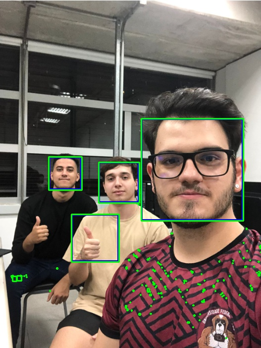
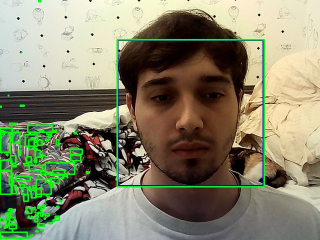
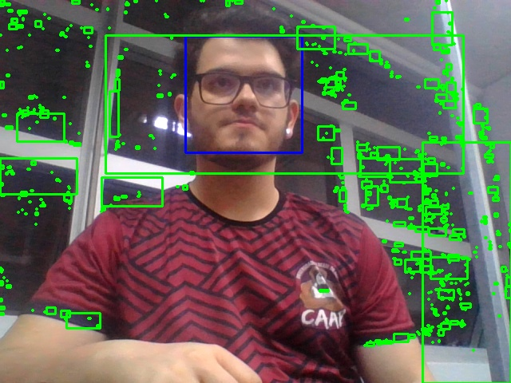
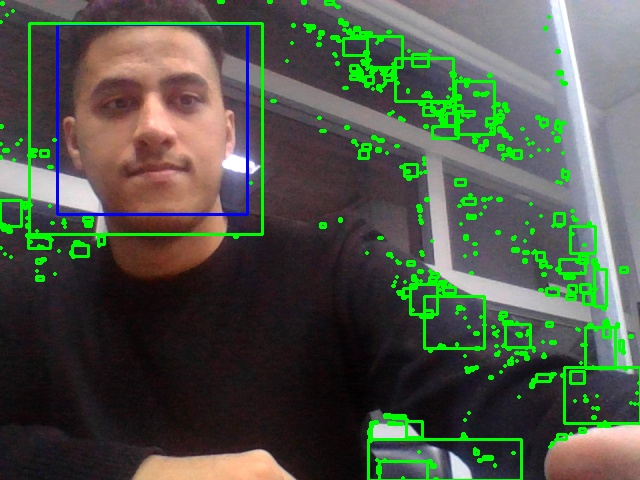

Nessa laboratório alguns comandas de detecçao de obejtos
Saber trabalhar com html, python(bibliotecas numpy, openCV)
Conhecimentos de Linux(Ubuntu)
Conhecimento de lógica de programação no terminal
Conhecer os comandos para visualizar e gravar imagens e vídeos
Utilizar comandos para alterar cores
Calcular histograma e limiarização
Realizar subtraçao de fundo
Conhecimento de Features
Conhecimento de Cascade Classifier
Usamos os arquivos dados no roteiro para seguir e resolver os problemas através do terminal no ubuntu. Para a gravação dos vídeos usamos a webcam fornecida no laboratorio, e utilizamos um código em openCV para capturar as imagens. Tambem utilizamos comandos em pyton para alterar as cores e calcular histograma e fazer a limiarização. Neste lab faremos o use de comandos de detecção de partes do corpo como cascade Classification
(1) Desenvolva programas para fazer a leitura de sua imagem geral dos membros da equipe e da imagem com avatares.
Este código carrega o XML Haarcascade para detecção de faces e o utiliza para detectar faces na imagem. Em seguida, ele aplica a detecção de objetos azuis na imagem, utilizando a transformação de cores HSV e a filtragem por cor. Os objetos azuis detectados são destacados com retângulos verdes.
O XML Haarcascade usado aqui foi: haarcascade_frontalface_default.xml
import cv2
# Carregar o arquivo XML Haarcascade para detecção de face
cascade_path = 'haarcascade_frontalface_default.xml'
face_cascade = cv2.CascadeClassifier(cascade_path)
# Função para detectar objetos azuis na imagem
def detect_blue_objects(image):
# Converter a imagem para o espaço de cores HSV
hsv = cv2.cvtColor(image, cv2.COLOR_BGR2HSV)
# Definir os limites da cor azul em HSV
lower_blue = (90, 50, 50)
upper_blue = (130, 255, 255)
# Criar uma máscara para filtrar objetos azuis na imagem
mask = cv2.inRange(hsv, lower_blue, upper_blue)
# Encontrar os contornos dos objetos azuis na máscara
contours, _ = cv2.findContours(mask, cv2.RETR_EXTERNAL, cv2.CHAIN_APPROX_SIMPLE)
# Desenhar retângulos ao redor dos objetos azuis detectados
for contour in contours:
x, y, w, h = cv2.boundingRect(contour)
cv2.rectangle(image, (x, y), (x+w, y+h), (0, 255, 0), 2)
return image
# Carregar a imagem
image_path = 'cantea_azul.JPG'
image = cv2.imread(image_path)
# Realizar a detecção de faces na imagem
gray = cv2.cvtColor(image, cv2.COLOR_BGR2GRAY)
faces = face_cascade.detectMultiScale(gray, scaleFactor=1.1, minNeighbors=5, minSize=(30, 30))
# Desenhar retângulos ao redor das faces detectadas
for (x, y, w, h) in faces:
cv2.rectangle(image, (x, y), (x+w, y+h), (255, 0, 0), 2)
# Realizar a detecção de objetos azuis na imagem
image_with_blue_objects = detect_blue_objects(image)
# Exibir a imagem resultante
cv2.imshow('Detecção de Objetos', image_with_blue_objects)
# Verificar se a tecla 'q' foi pressionada para salvar a imagem
while True:
key = cv2.waitKey(1) & 0xFF
if key == ord('q'):
cv2.imwrite('imagem_com_rostos_e_objetos_azuis.jpg', image_with_blue_objects)
break
cv2.destroyAllWindows()
(Foto em grupo)
Resultado:
(2) Outro programa modificando o item (1), agora fazendo a leitura de imagem da webcam. Neste caso, o programa deve adicionalmente mostrar uma janela ao vivo com a imagem e o resultado da identificação do objeto. Realize este experimento com um modelo XML. Salvar a imagem ao toque de uma tecla.
O código modificado permite a detecção de faces e objetos azuis em tempo real usando a webcam. Ele utiliza o classificador de cascata Haarcascade para detectar faces e aplica um filtro de cor para identificar objetos azuis na imagem capturada. A cada quadro da webcam, os retângulos delimitadores são desenhados ao redor das faces detectadas e dos objetos azuis. Ao pressionar a tecla 'q', um print da webcam é salvo como "webcam_print.jpg". O programa continua em execução até que a tecla 'q' seja pressionada.
import cv2
# Carregar o arquivo XML Haarcascade para detecção de face
cascade_path = 'haarcascade_frontalface_default.xml'
face_cascade = cv2.CascadeClassifier(cascade_path)
# Função para detectar objetos azuis na imagem
def detect_blue_objects(image):
# Converter a imagem para o espaço de cores HSV
hsv = cv2.cvtColor(image, cv2.COLOR_BGR2HSV)
# Definir os limites da cor azul em HSV
lower_blue = (90, 50, 50)
upper_blue = (130, 255, 255)
# Criar uma máscara para filtrar objetos azuis na imagem
mask = cv2.inRange(hsv, lower_blue, upper_blue)
# Encontrar os contornos dos objetos azuis na máscara
contours, _ = cv2.findContours(mask, cv2.RETR_EXTERNAL, cv2.CHAIN_APPROX_SIMPLE)
# Desenhar retângulos ao redor dos objetos azuis detectados
for contour in contours:
x, y, w, h = cv2.boundingRect(contour)
cv2.rectangle(image, (x, y), (x+w, y+h), (0, 255, 0), 2)
return image
# Inicializar a webcam
cap = cv2.VideoCapture(0)
while True:
# Capturar o quadro da webcam
ret, frame = cap.read()
# Verificar se o quadro foi capturado corretamente
if not ret:
print("Erro ao capturar o quadro da webcam.")
break
# Realizar a detecção de faces no quadro
gray = cv2.cvtColor(frame, cv2.COLOR_BGR2GRAY)
faces = face_cascade.detectMultiScale(gray, scaleFactor=1.1, minNeighbors=5, minSize=(30, 30))
# Desenhar retângulos ao redor das faces detectadas
for (x, y, w, h) in faces:
cv2.rectangle(frame, (x, y), (x+w, y+h), (255, 0, 0), 2)
# Realizar a detecção de objetos azuis no quadro
frame_with_blue_objects = detect_blue_objects(frame)
# Exibir o quadro com o resultado da detecção
cv2.imshow('Detecção de Objetos', frame_with_blue_objects)
# Verificar se a tecla 'q' foi pressionada para salvar um print da webcam
key = cv2.waitKey(1) & 0xFF
if key == ord('q'):
# Salvar um print da webcam
cv2.imwrite('webcam_print.jpg', frame)
print("Print da webcam salvo com sucesso!")
break
# Liberar os recursos
cap.release()
cv2.destroyAllWindows()
Resultado:
Gabriel
Resultado:
Joao
Resultado:
Micael
